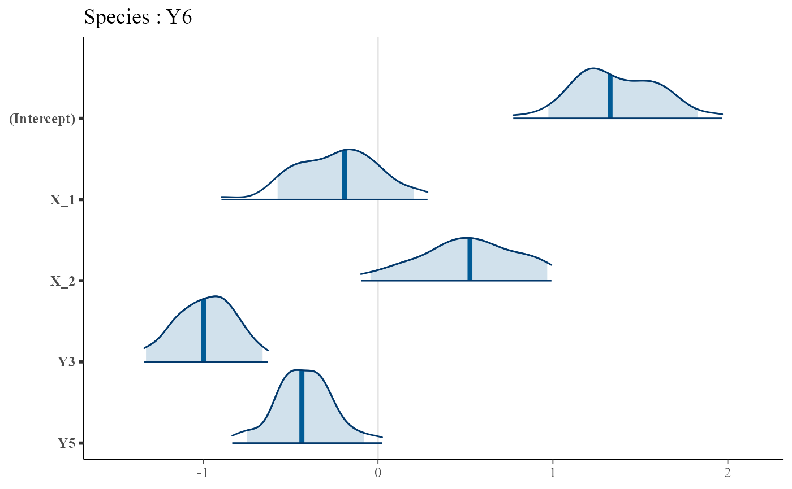

Plots the regression coeffiecients of a local SDMfit model
# S3 method for SDMfit
plot(x, level = 0.95, ...)A SDMfit object, typically obtained with trophicSDM() and available in the field $model of a trophicSDMfit object
the confidence level of the confidence intervals
additional arguments
data(Y, X, G)
# define abiotic part of the model
env.formula = "~ X_1 + X_2"
# Run the model with bottom-up control using stan_glm as fitting method and no penalisation
# (set iter = 1000 to obtain reliable results)
m = trophicSDM(Y, X, G, env.formula,
family = binomial(link = "logit"), penal = NULL,
mode = "prey", method = "stan_glm")
#> [1] "--- Species Y1 ---"
#> [1] "--- Species Y2 ---"
#> [1] "--- Species Y3 ---"
#> [1] "--- Species Y5 ---"
#> [1] "--- Species Y4 ---"
#> [1] "--- Species Y6 ---"
#> Warning: Tail Effective Samples Size (ESS) is too low, indicating posterior variances and tail quantiles may be unreliable.
#> Running the chains for more iterations may help. See
#> https://mc-stan.org/misc/warnings.html#tail-ess
# Plot species Y6
plot(m$model$Y6)
